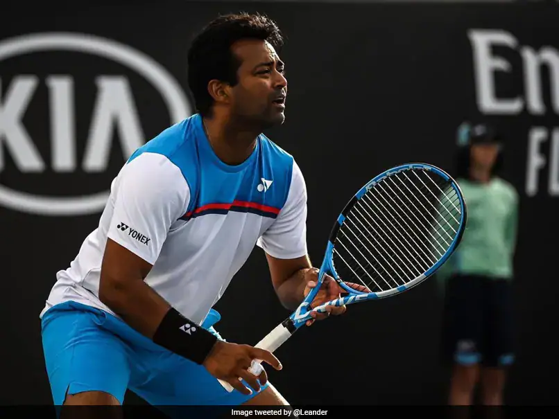
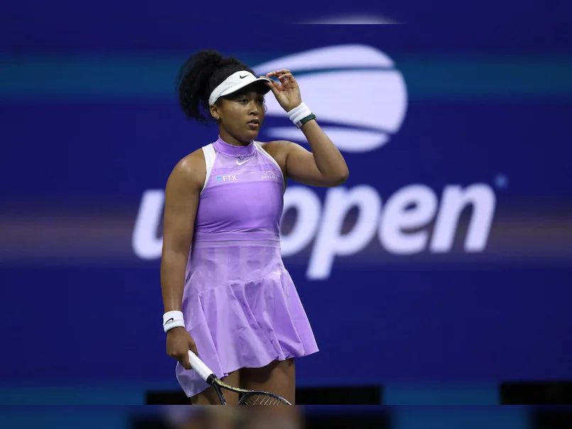

Nick Kyrgios: Australian says he does not want to play tennis any more

Nick Kyrgios said he is "tired" and does not want to play tennis any more as he continues to recover from injury.
The 28-year-old Australian missed all four majors in 2023 because of wrist, knee and foot injuries.
On Saturday, Kyrgios said he will not take part in the Australian Open in January because of injury concerns.
"If it was up to me, I don't really want to play any more to be honest," Kyrgios told the On Purpose with Jay Shetty podcast.
"I have to [keep playing]. I've got so much more to give but, for me, I don't feel like playing any more."
Kyrgios enjoyed the best year of his career in 2022, reaching his first Grand Slam singles final at Wimbledon and a career-high of 11 in the world rankings.
But, he withdrew from the Australian Open in January with a knee injury before undergoing surgery for the issue.
He then missed the French Open because of a foot injury and Wimbledon with a wrist ligament problem, which also forced him out of the US Open.
The 2021 Australian Open doubles champion has since had surgery on his wrist but, having dropped out of the world rankings, he said he is "exhausted" with his continuing recovery process.
"I'm tired. I have had three surgeries now. I'm only 28 years old, I always wanted to have a family and not be in pain. When I get up, I can't walk without pain. It's a tough gig," he said.
Kyrgios has played just one ATP Tour match this year, losing to China's world number 64 Yibing Wu in Stuttgart in June.
"I only want to play for about another one to two years, be at the top, and go down my own terms," Kyrgios said.
"I would hate to have another surgery or anything like that. I think I've still got the ability to have a good one to two years and then that's it.
"I think I'll be at peace with everything I've achieved and I'm going to have to just say to everyone out there who wants me to play more, 'you're just going to have to be OK with me not playing any more'."
He has previously opened up about mental health issues that left him contemplating suicide in 2019.
"That period in 2019 accelerated my exhaustion and almost pushed me to the end of my career a bit earlier.
"If I had a normal career and I flew under the radar, I don't feel I'd feel this way but those couple years really, I think, put a lot on my age," he said.
"It's just hard. I am tired. I'm tired of playing tennis."
Leander Paes, Vijay Amritraj Become First Asian Men To Be Inducted In International Tennis Hall Of Fame
Former doubles world No. 1 Leander Paes and broadcaster and promoter Vijay Amritraj of India have become the first Asian men to be inducted into the International Tennis Hall of Fame. Besides the duo, renowned journalist and writer Richard Evans have also been elected in the Ultimate Honour in Tennis. Paes, an 18-time Grand Slam champion in doubles and mixed doubles, has been selected in the player category, while Amritraj and United Kingdom's Evans are inductees in the contributor category, which is considered for election every two years.
The contributor category recognises true pioneers, visionary leaders, or individuals/groups who have made a transcendent impact on the sport.
The Class of 2024 will be officially inducted into the International Tennis Hall of Fame on Saturday in Newport, Rhode Island.
Paes, Amritraj and Evans will join an elite group of 264 inductees from 27 nations – with India set to become the 28th nation represented in the Hall of Fame.
"It has been my life's honour to play for my country for over three decades in a sport that has given and taught me everything. This acknowledgment is indeed the ultimate accolade for every tennis player. Induction into the International Tennis Hall of Fame belongs not just to me, but to our billion-plus Indians," Paes said.
"Receiving this honour culminates a professional journey of a lifetime, standing on the shoulders of greats and sets the tone for other youngsters in Asia and around the world." During his three-decade career, Paes topped the world rankings in doubles and won 18 Grand Slam titles. With eight doubles Grand Slam titles and 10 in mixed doubles, he is one of only three men in tennis history to capture a career Grand Slam in both disciplines.
Paes is tied with his former partner, Hall of Famer Martina Navratilova, for the most mixed doubles major titles in history. Additionally, he and Hall of Famer Martina Hingis are one of only two mixed doubles teams in the Open Era to complete a career Grand Slam together.
In a testament to his longevity at the sport's height, Paes spent a total of 462 weeks inside the ATP doubles top 10, including 37 weeks at No. 1, and won 55 doubles titles on tour.
Paes proudly represented India in international competition for 30 years, winning a Davis Cup record 45 doubles rubbers during his career. He competed in a record seven consecutive Olympic Games, the most in tennis history, and is India's only Olympic medallist in tennis, capturing bronze in singles at the 1996 Atlanta Games..
"I am thrilled to congratulate Leander Paes, Vijay Amritraj, and Richard Evans on their election to the International Tennis Hall of Fame," Kim Clijsters, Honorary President of ITHF and Class of 2017 Hall of Famer said.
Returning Naomi Osaka Targets Paris Olympics, More Grand Slam Titles
A "nervous" Naomi Osaka has targeted a place at next year's Paris Olympics and more Grand Slam titles after she makes her eagerly anticipated return to tennis. The 26-year-old former world number one is set to return to competition at the Brisbane International starting at the end of the month, having not played on tour since September 2022. The four-time Grand Slam champion gave birth to daughter Shai in July and she has also struggled with her mental health and the pressures of tennis.
She told Japanese broadcaster NHK that she feels "nervous and also happy and excited" as she prepares to return.
And Osaka, who lit the cauldron to open the pandemic-postponed Tokyo Olympics in 2021, hopes her comeback takes her all the way to next summer's Paris Games.
"In the first chapter of my tennis I kind of got away with just being myself and playing with my instincts," she said.
"I think I want to be someone that understands the game a lot more.
"I definitely want to win more Grand Slams and I guess put in more time in the French Open and Wimbledon, and play the Paris Olympics," she added.
Playing for Japan at the Tokyo Games, where spectators were mostly banned because of Covid, Osaka lost in straight sets in the third round to Marketa Vondrousova of the Czech Republic.
She has won four major titles, triumphing in the 2019 and 2021 Australian Opens, and winning the US Open in 2018 and 2020.
Osaka will make her return to Grand Slam tennis at the Australian Open in January and says she will have a different mindset now that she is a mother.
"I've never been a person that's really good at playing for myself, if that makes sense," she said.
"So I kind of like the feeling of having the responsibility of having to take care of Shai and wanting to show her around the world.
"I kind of feel more like I'm playing for her."